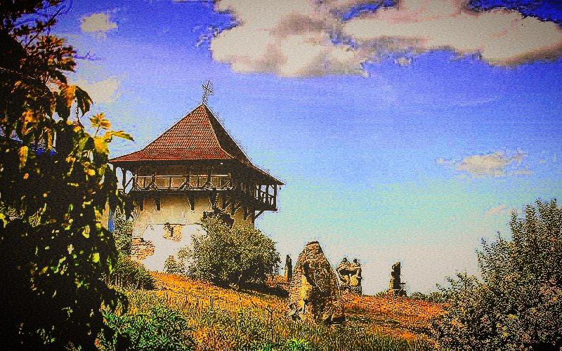
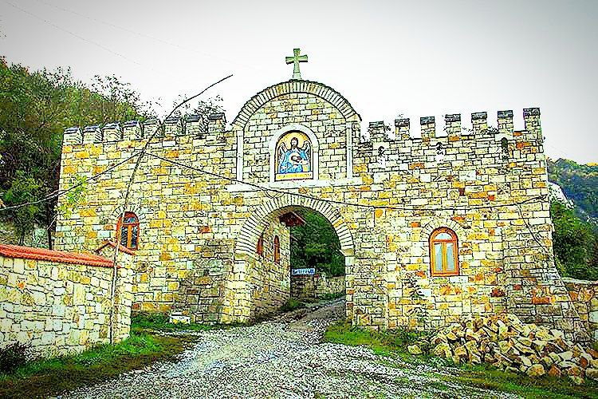
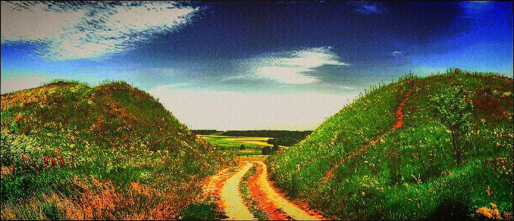

.png) 7 чудес Вінниччини
Улюблені три
Наступні чотири
Контакти
7 чудес Вінниччини
Улюблені три
Наступні чотири
Контакти
Шаргород, заснований Ян Замойським у 1579 році, поєднує багату історію з архітектурними шедеврами...

Історико-культурний заповідник «Буша» у Вінницькій області, заснований у 2000 році...
Околиці села Лядова, розташованого біля каньйону Дністра, вражають унікальними природними об’єктами...
Немирівське скіфське городище, або Великі вали, є унікальною пам’яткою України...
